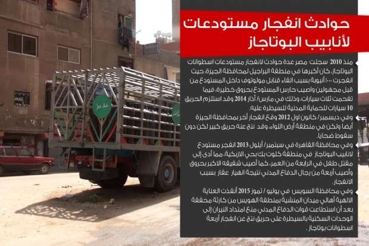
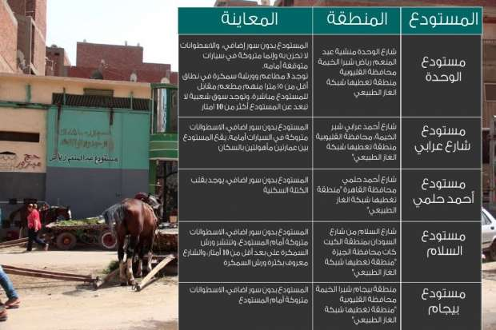
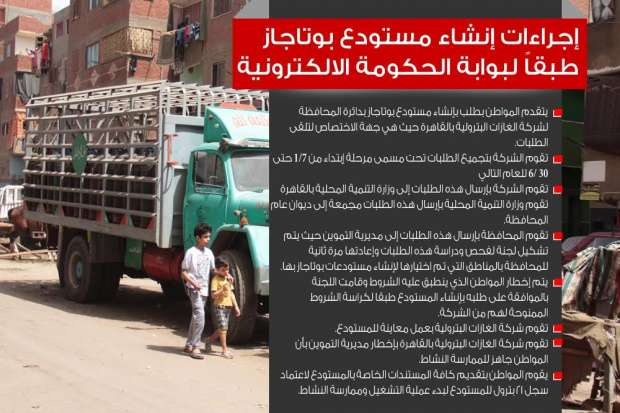
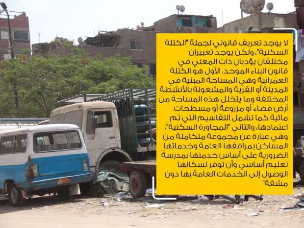
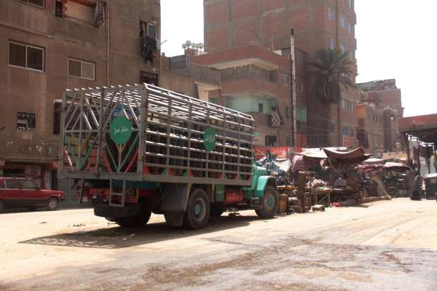

أحدث الأخبار
- مقتل 3 أشخاص وإصابة 3 آخرين في حادث مروري بالبحيرة
- وزير الخارجية يجري اتصالاً مع رئيس المجلس الرئاسي الليبي
- عاصمة مصر تتجه لزيادة سكانية نصف مليون العام الجاري
- باولو يقود هجوم الزمالك أمام رينجرز في دوري الأبطال
- المالية تعفي المطاعم غير السياحية من ضريبة القيمة المضافة بشروط
- "القضاء الإداري" يلزم الجامعة الأمريكية بتحصيل مصروفاتها بالجنيه المصري
- البورصة ترتفع بنسبة 0.52% في نهاية التعاملات
- إعادة فتح موانىء السويس بعد تحسن الأحوال الجوية
مستودعات الأنابيب ..قنابل موقوتة وسط مساكن المصريين
سيارة متوقفة في عرض الطريق أمام مستودع أنابيب بالقاهرة - تصوير سماح زيدان - أصوات مصرية
إنّه ليس تمرينا على إنذار الحريق، بل هو إخلاء حقيقي يعيشه سكان مدن وقرى في أي لحظة من الليل أو النهار بمجرد سماع انفجارات في مستودع أنابيب قرب مسكنهم. فجأة، ودون سابق إنذار، يتدافع السكان للفرار من منازلهم عبر أقرب مخرج، سواء كان بابا أو نافذة للنجاة بأرواحهم بعد سماع فرقعة اسطوانات الغاز.
والسبب هو تكدس مستودعات اسطوانات الغاز خاصة في الأحياء السكنية في غياب قانون يمنع ذلك الانتشار، وسط عدم تطبيق شروط الأمان على هذه الأماكن وعلى السيارات التي تنقل أنابيب الغاز بينما تضيع المسؤولية بين وزارات البترول والتموين والدخلية والمحليات.
ربة المنزل الثلاثينية فاتن علي لا تزال تعاني من كوابيس بسبب ما حدث لها قبل 15 عاما. "قضينا ليلة رعب...كنا بنشوف الأنبوبة طايرة في الجو وبتنفجر" بعد انفجار مستودع اسطوانات البوتاجاز بأرض عودة في منطقة شبرا الخيمة على الطرف الشمالي للقاهرة الكبرى أواخر العام 2000 .
هذا المشهد بكل ما فيه من معاناة ليس جديداً ولا فريداً في المناطق السكنية في مصر حيث يوجد نحو سبعة آلاف مستودع للبوتاجاز على مستوي البلاد، ما يهدد أرواح السكان مع ضعف رقابة أجهزة المحليات متمثلة في سلطة الحي، وعدم تطبيق معايير الأمان فضلاً عن ضعف هذه المعايير أصلاً حسبما يكشفه هذا التحقيق.
فاتن لم تنس حتى اليوم حالة الخوف الذي عاشتها هي وسكان شارع السد العالي والشوارع المحيطة به في المنطقة. بدأ الحريق حين اندلعت النيران في أربع اسطوانات غاز تابعة لمستودع بوتاجاز خاص، كانت محملة على عربة "تروسيكل" تقف أمامه. وزاد الوضع سوءا بعد أن وصلت النيران إلى عبوات زيت كانت موجودة أمام محل في سوق شعبي مواجه للمستودع لترتفع ألسنة اللهب إلى عنان السماء.
ومن حادثة لاتزال آثارها لم تندمل رغم مرور 15 عاما إلى الأمس، تكرر موقف مشابه مع أم محمد زوجة سامي جودة مالك مستودع للانابيب في قرية ميت يزيد بمحافظة الشرقية إثر إنفجار سيارة محملة بالأنابيب أمام المستودع في أواخر أكتوبر/ تشرين أول 2015.
تقول: "صحينا والنار ماسكة في العربية وع بال لما جت المطافي كان 20 أنبوبة بوتاجاز انفجروا، والحمد لله إننا صحينا قبل الإنفجار وإلا كنا بقينا ضحايا" بحسب ما تقول. سارع سكان العقارات المجاورة بترك منازلهم والابتعاد عن المنطقة لحين قدوم سيارات الإطفاء. لكن الإنفجارات المتلاحقة للأنابيب تسببت أيضا في تصدع الجدران. ولم يتقدم السكان بدعوى لطلب تعويض نظراً لغياب ثقافة طلب التعويض في هذه القرية حسبما يقول سكان لمعدة التحقيق.

أحد مستودعات الأنابيب في القاهرة - تصوير سماح زيدان - أصوات مصرية
قرار منذ أربعة عقود
في ست صفحات، يقع قرار وزير الاسكان والتشييد الأسبق عبد العزيز كمال رقم 79 لسنة 1973 المنظم لإنشاء مستودعات الأنابيب ومحال الغازات البترولية، الصادر بتاريخ 28 فبراير/ شباط 1973.
القرار حدد الارتفاع اللازم لسقف المستودعات بأربعة أمتار، واشترط إقامة سياج خارجي على بعد مترين من المستودع، وحظر ترك سيارات نقل الاسطوانات أو تخزين الاسطوانات خارج المكان، بيد أن ذات القرار لم يحظر وجود تلك المستودعات داخل الكتل السكنية، واكتفى باشتراط ترك مسافات تتراوح بين 15 و20 متراً بين المستودع وأماكن التجمعات المغلقة كدور السينما، وكذلك المستشفيات. واشترط أيضا عدم وجود المستودعات بالقرب من أماكن بها مصادر لهب كالورش الصناعية والمطاعم دون أن يحدد أي مسافة أمان.
لكن جولة ميدانية لمعدة التحقيق في خمسة مستودعات موزعة بين محافظات القاهرة والقليوبية والجيزة، كشفت غياب كلّ هذه الشروط الواردة في القرار حسب الجدول التالي:
بيان وصفي لحالة بعض مستودعات الأنابيب في مصر
وبحسب عمال بالمستودعات، فإن ابقاء سيارات الأنابيب بالخارج يوفر المجهود عند نقل الحمولة إلى عربات الموزعين.
وفي جميع المستودعات الخمسة، كان عمّال التحميل والتنزيل يلقون بالاسطوانات على الأرض من أعلى الشاحنة المحملة أثناء تفريغها بحسب ما رصدت معدة التحقيق. ولم يستخدم الكلارك "رافعة صغيرة" لنقل الاسطوانات في أي منها ما يزيد احتمالية أن تكون هذه الطريقة أحد أسباب انفجار اﻻسطوانات بحسب العميد هاني رفعت خبير المفرقعات بوزارة الداخلية.
ويؤكد العميد رفعت خطورة تواجد مستودعات البوتاجاز داخل التجمعات السكنية. فانفجار اسطوانة واحدة يدمر مساحة دائرة قطرها 10 أمتار تدميرا كاملا. لكن ما يخفف الصدمة هو أن انفجارات الأنابيب لا تحدث مرة واحدة، وإنما بصورة متتابعة.
أمان المستودعات الخاصة

خطوات إنشاء مستودعات الأنابيب
تنص إجراءات الحصول على ترخيص مستودع بوتاجاز والمنشورة على موقع الحكومة الإلكترونية على ضرورة معاينة شركة الغازات البترولية (بتروجاس) لموقع المستودع، على أن توصي للمحافظة أو المحليات إما بالموافقة أو الرفض. وتتبع بتروجاس الهيئة العامة للبترول وهي الشركة المسؤولة عن توزيع اسطوانات البوتاجاز لكافة المستودعات في البلاد وكذلك الضخ لمصانع التعبئة.
وعلى مدى ثلاثة أشهر، لم يستجب المهندس عادل الشويخ رئيس شركة بتروجاس لطلبات معدة التحقيق للحصول على تعليق حول الموضوع.
كذلك، لم تجد المحاولات مع نائب رئيس هيئة البترول لشؤون العمليات المهندس عمرو مصطفى. لكن الشويخ قال في تصريحات سابقة بجريدة الوطن المصرية في أغسطس 2014 أن شركة بتروجاس أخطرت مستودعات القطاع الخاص بمعدلات الأمان، ولم يلتزموا بها ملقيا بالمسؤولية على أجهزة المحليات التي تضم المحافظات ومديريات الوزارات في كل محافظة، وتحديدا مديرية التموين.
وأكد الشويخ أن المستودعات الحكومية تلتزم باشتراطات الأمان، منها نقل الاسطوانات معبأة داخل صناديق بشكل رأسي، مما يقلل المخاطر في التعامل مع الاسطوانات.
ويضيف أن المستودعات المقامة حديثا في المدن الجديدة يتم انشاؤها بعيدا عن التجمعات السكنية استنادا لقرار وزاري صدر عام 2002. لكن المستودعات القديمة لا يمكن نقلها حالياً لأن المواطن سيتحمل تكلفة نقل اسطوانة البوتاجاز، الأمر الذي سيزيد تكلفتها للضعف طبقاً للمسافة، خاصة وأن اسطوانات البوتاجاز أحد الأشياء الممنوع نقلها بالمواصلات العامة.
بيد أن تصريحات الشويخ تعارضت والجولة الميدانية التي قامت بها معدة التحقيق ثلاث مناطق بمحافظات القاهرة الكبرى، وهى شبرا الخيمة بالقليوبية والكيت كات بالجيزة وشارع شبرا بالقاهرة، حيث تبين أن المستودعات المذكورة تقع في مناطق تم توصيل خدمة الغاز الطبيعي، ما يجعل الحديث عن مراعاة عدم تحميل المستهلك تكلفة إضافية للنقل أمراً غير منطقي.
وحسب أحدث البيانات على موقع شركة غاز مصر على الانترنت، تم توصيل الغاز الطبيعي إلى ثلاثة ملايين و200 ألف منزل حتى نهاية العام 2013 في مناطق القاهرة الكبرى وبورسعيد والسويس والاسماعيلية ومحافظات الدلتا، والاسكندرية ولم تحدد المناطق، إلا أن الموقع أكد أيضا على أنها خدمة اختيارية.
الحكومة خارج القانون
في عام 2002، أصدر مجلس الوزراء قرارا يقضي بنقل المستودعات خارج الكتل السكنية أي التجمعات السكنية، غير أن ذات القرار ترك لكل محافظة تحديد آلية التنفيذ، كما لم يحدد شروطا أو مسافات معينة للابتعاد عن "التجمعات أو الكتل السكنية". وطبقاً لقرار رقم 313 لسنة 1980، يخوّل للمحافظين صلاحيات وزير التموين والتجارة الداخلية، وبالتالي فكل محافظ له سلطات تحديد اللائحة التنفيذية لأي قرار يخص قطاع التموين ومنها مستودعات البوتجاز.
لكن حسام عرفات رئيس شعبة المواد البترولية في الاتحاد العام للغرف التجارية، يقول إن قرار مجلس الوزراء طبّق فقط على المستودعات الخاصة وليس الحكومية. وتوجد لشركة بوتاجاسكو التابعة للدولة، وهي من الشركات التي تبيع للجمهور مباشرة، مستودعات داخل الكتل السكنية مثل شارع بورسعيد بمحافظة القاهرة، وأيضا مناطق عين الصيرة وحلوان و15 مايو ومدينة النهضة، وهو ما يؤكده موقع بوتاجاسكو على الانترنت، قبل خضوعه للتعديل، وطبقاً لمكالمة مسجلة مع خدمة "الكول سنتر" لشركة بوتاجاسكو، تم تأكيد وجود مستودع بمنطقة عين الصيرة وآخر بشارع بورسعيد بمنطقة الوايلي بمحافظة القاهرة.
وتعد شركة بوتاجاسكو إحدى الشركات التي تقوم بتوزيع الاسطوانات من مستودعاتها للجمهور، وتقوم كذلك بالبيع للجمهور مباشرة لتخفيف العبء عن شركة بتروجاس، حيث تغطي مناطق محددة، وتشاركها في ذلك شركات أخرى كشركة كايروجاس.
عرفات المسؤول في الغرف التجارية التي تمثل القطاع الخاص قال إن عدد مستودعات القطاع الخاص على مستوى الجمهورية بالكامل هو 3600 مستودع في مقابل 3350 مستودعا حكومياً أي أن الاجمالي يقارب سبعة آلاف مستودع مشيراً إلى أن قرار مجلس الوزراء لم يحدد معنى "الكتلة السكنية".

أنابيب بوتاجاز على سيارة متوقفة أمام مستودع - تصوير سماح زيدان - أصوات مصرية
محافظة الشرقية مثلاً، نقلت كل مستودعات البوتاجاز خارج الكتل السكنية والقرى خلال عامي 2013 - 2014، وهو ما تبين لمعدة التحقيق في جولة عقب حادث ميت يزيد بالشرقية. أما محافظة القليوبية فلم تنقل أي مستودع، حيث وجهت محافظة الجيزة إنذارات لأغلب المستودعات لكن لم تنفذ بعد بحسب بحث أجرته معدة التحقيق على المحافظات الثلاث.
ولم تتمكن معدة التحقيق من حصر عدد المخالفات والإنذارات التي وجهتها المديريات في مختلف المحافظات، لصدور قرارات كل محافظة بشكل منفصل. غير أنها وللوقوف على مثال يوضّح حجم المخالفات، تواصلت مع وكيل وزارة التموين بمحافظة الجيزة حفظي الياس الذي أوضح أن العام 2015 شهد تحرير 863 مخالفة لمستودعات بوتوجاز موزعة بين اشتراطات الأمان، ومخالفات أخرى تتعلق بفروق الأسعار والبيع في السوق السوداء فيما تم إغلاق سبعة مستودعات لاشتراطات الأمان بناءً علي توصيات الدفاع المدني.
مسؤولية متفرقة
يوضح موقع الحكومة الإلكترونية أن مسؤولية شركة بتروجاس ممثلة في إدارة الغازات البترولية بكل محافظة في معاينة مكان المستودع والتأكد من مطابقته لشروط الأمان، إلا أن القرار الرئاسي بقانون رقم 62 لسنة 2014 بتعديل بعض أحكام القانون رقم 148 لسنة 1959 بشأن الدفاع المدني، اشترط موافقة الدفاع المدني على الترخيص.
وتتابع إدارة الدفاع المدني، وكذلك شركة بتروجاس مستوى الأمان في المستودع أثناء فترة عمله، فيما تختص وزارة التموين متمثلة في مديرية التموين في كل محافظة بتحديد حصة كل مستودع من الاسطوانات، وكذلك المخالفات تتعلق بالسعر أو تهريب الاسطوانات للسوق السوداء باعتبارها سلعا مدعّمة، وتبقي سلطة منح المستودع الترخيص أو الغائه أو نقله في يد المحليات/ المحافظة.
ولدى مواجهة وكيل وزارة التموين بمحافظة القليوبية جمال السيد بعدم تطبيق ثلاثة مستودعات داخل المحافظة لاشتراطات الأمان الموجودة في قرار وزير الاسكان والتشييد رقم 79 لسنة 1973، أبدى السيد اندهاشه قائلا "هو فيه قرار بيقول كده؟".

لوحة مكتوب عليها "غاز خطر".. هل تكفي لدرء خطر سيارة متوقفة أمام مستودع أنابيب؟ - تصوير سماح زيدان - أصوات مصرية
وتوجهت معدة التحقيق إلى اللواء مجدي الشلقامي مدير إدارة الدفاع والحماية المدنية بمحافظة الجيزة للحصول على تعليق. لكنه اشترط الحصول على تصريح من إدارة الإعلام والعلاقات العامة بوزارة الداخلية. وعلى مدى شهر كامل لم تستجب وزارة الداخلية رغم تقديم خطاب رسمي يفيد بموضوع التحقيق وطلب مقابلة الشخص المطلوب.
ورغم عدم استجابة الداخلية، إلا أن مصدرا بالإدارة اشترط عدم ذكر اسمه قال إن الأزمة تكمن في المحليات التي وافقت على منح التراخيص للمستودعات غير مستوفية شروط الأمان، أو داخل الكتل السكنية. فقبيل إصدار قرار رئاسي بقانون رقم 62 لسنة 2014 بتعديل بعض أحكام القانون رقم 148 لسنة 1959 بشأن الدفاع المدني، لم يكن لادارة الدفاع المدني أي سلطة تخص منح التراخيص للمستودعات الجديدة، وكانت معاينة أماكن المستودعات تتم بمعرفة شركة الغازات البترولية "بتروجاس"، إلا أن القرار السابق منح لوزارة الداخلية ممثلة في الدفاع المدني حق الموافقة على إنشاء المستودعات، ولكن هذا القرار لا ينطبق على المستودعات القائمة قبيل هذا القرار الحاصلة على تراخيص.
من جانبه يقول د.علي عبدالرحمن محافظ الجيزة السابق، إن المحافظة التزمت بتوصيات الدفاع المدني عقب انفجار مستودع أرض اللواء في 2012، والبراجيل عام 2014، وأغلقت سبعة مستودعات موزعة بين الوراق والصف وأرض اللواء والبراجيل والعياط. وأضاف أن المحافظة قسمت المستودعات إلى قسمين. القسم الأول هي المستودعات الموجودة في المناطق التي تم مدها بالغاز الطبيعي حيث يتم إنذار أصحاب المستودعات بأن الترخيص الصادر لها سيلغى خلال ستة أشهر في حالة عدم النقل، أما المستودعات داخل الكتل السكنية في المناطق غير المشمولة بشبكة الغاز الطبيعي فيتم إمهالها لمدة ستة أشهر للنقل أو الغاء التراخيص، أما المستودعات المخالفة لشروط الأمان فكان يتم تغريمها بالإضافة إلى الإجراءات السابقة.
بيد أن إغلاق سبعة مستودعات فقط يكشف بطء التحرك الحكومي ضد المخالفين. وحتى كتابة هذا التحقيق لا تزال مستودعات أنابيب البوتجاز تعمل بشكل طبيعي، رغم أنها تمثل قنابل موقوتة داخل الكتل السكنية، يمكن لأي منها أن يكرر مأساة فاتن.
أنجز هذا التحقيق بدعم وإشراف شبكة إعلاميون من أجل صحافة استقصائية عربية (أريج) www.arij.net .


{kind=link}
تعليقات الفيسبوك